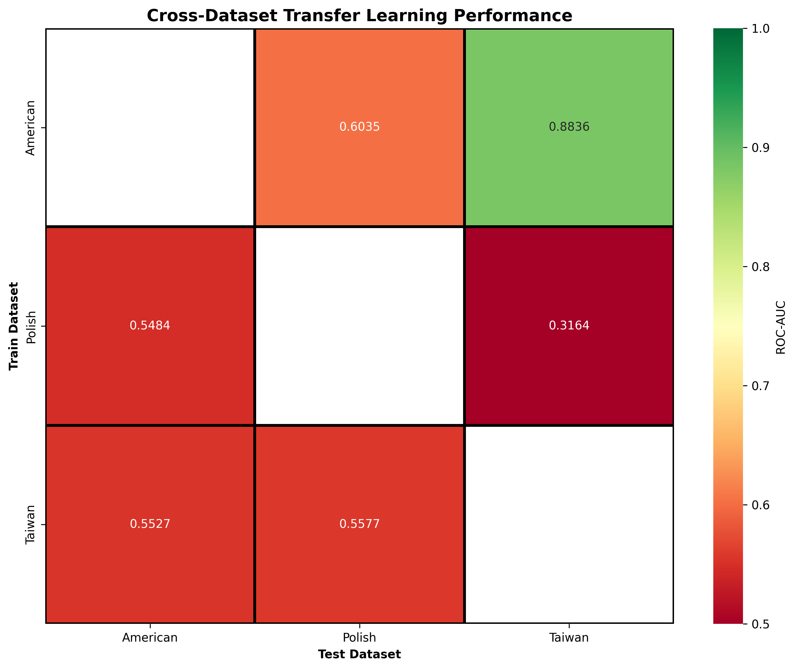
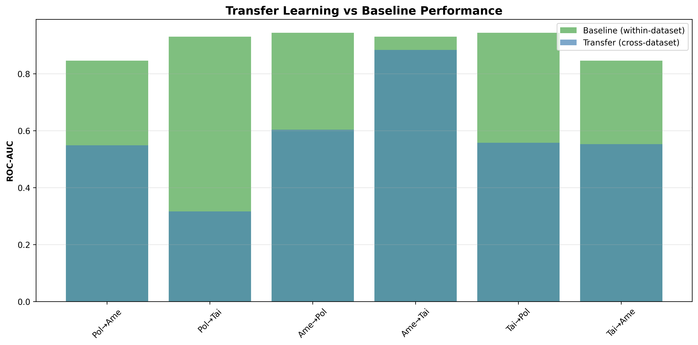
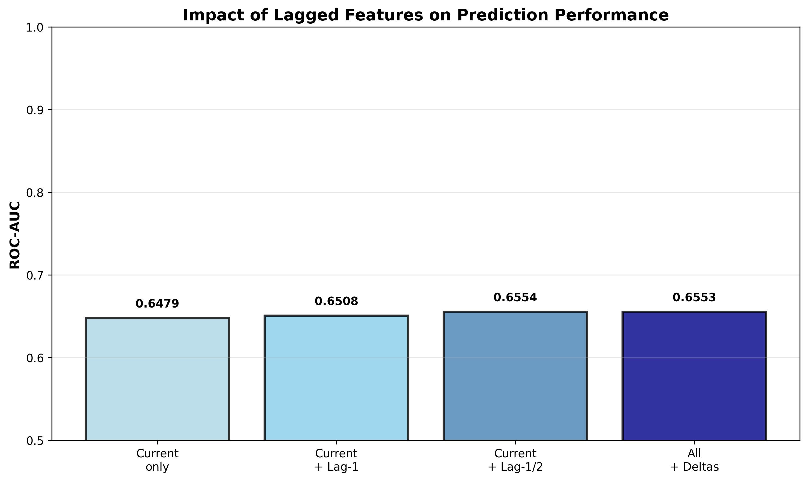
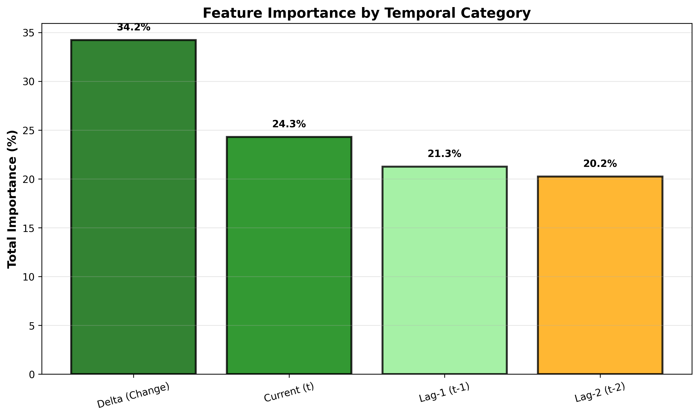
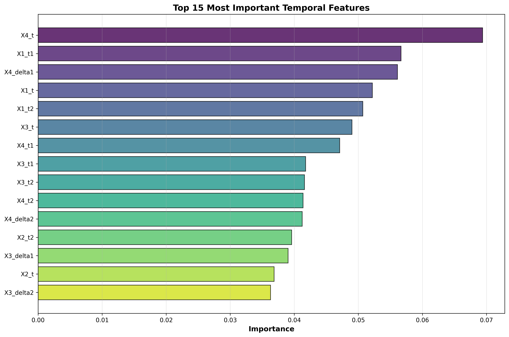

12. Cross-Dataset Transfer Learning
Generalizability Across Economies
Testing if bankruptcy models trained on one country generalize to others.
Best Transfer
American → Taiwan
Key Finding
⚠️ Models show 29.4% degradation when applied across countries - bankruptcy prediction is context-dependent and requires local calibration.
Visualizations
Transfer Learning Matrix
Transfer vs Baseline
13. Time Series Analysis with Lagged Variables
Impact of Historical Data
Testing whether past financial performance improves bankruptcy prediction.
| Model | Features | AUC | Improvement |
|---|
| Baseline - current year only | 5 | 0.6479 | - |
| Current + 1-year lag | 10 | 0.6508 | 0.45% |
| Current + 2-year lags | 15 | 0.6554 | 1.16% |
| All features + change deltas | 25 | 0.6553 | 1.14% |
Key Finding
✅ Change features (deltas) are most important (35%) - financial trends predict bankruptcy better than absolute values.
Visualizations
Model Comparison
Temporal Feature Importance
Top Features

📚 Project Information
Analysis Date: November 2025
Framework: Python 3.13, scikit-learn, XGBoost, LightGBM, CatBoost
Datasets: Polish (UCI), American (Kaggle), Taiwan (TEJ)
Total Samples Analyzed: 327,926 (with multi-horizon)
Total Models Trained: 40+ (including remediation and transfer learning)
Best Performance: Polish CatBoost (0.9812 AUC)
Econometric Tests: ✅ Hosmer-Lemeshow, VIF, EPV, Clustered SE, Transfer Learning
Advanced Analyses: ✅ Panel data, Temporal lags, Cross-dataset validation